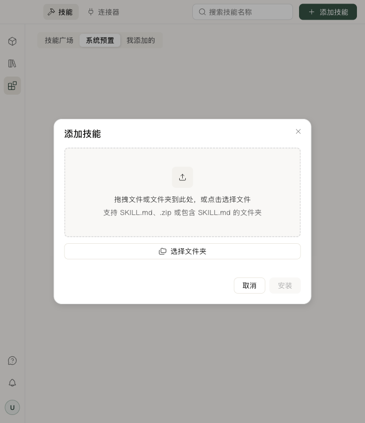
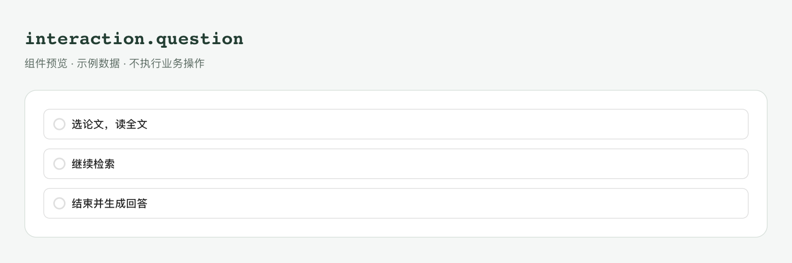
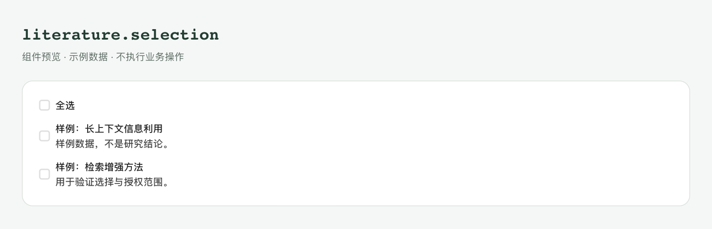
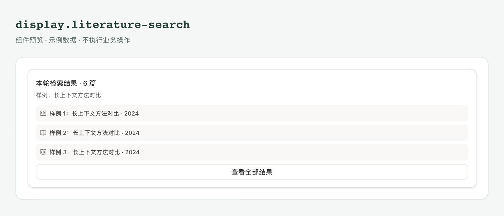
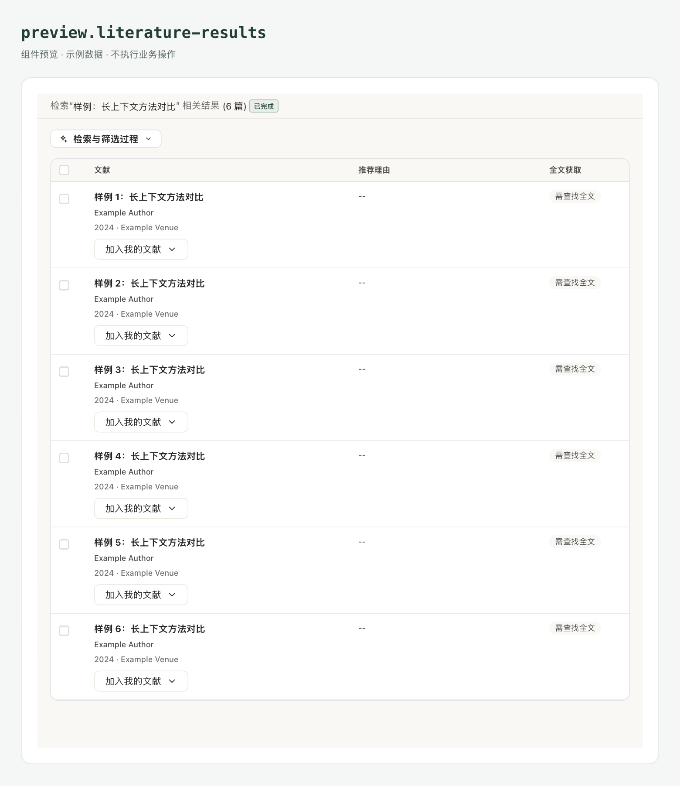
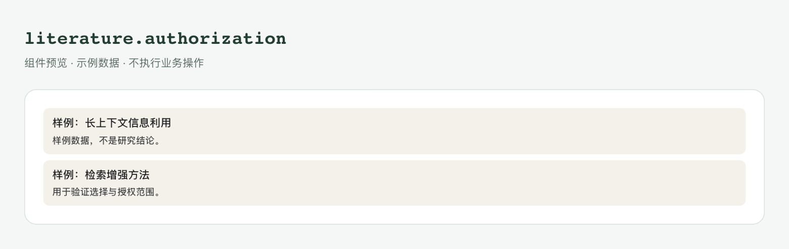
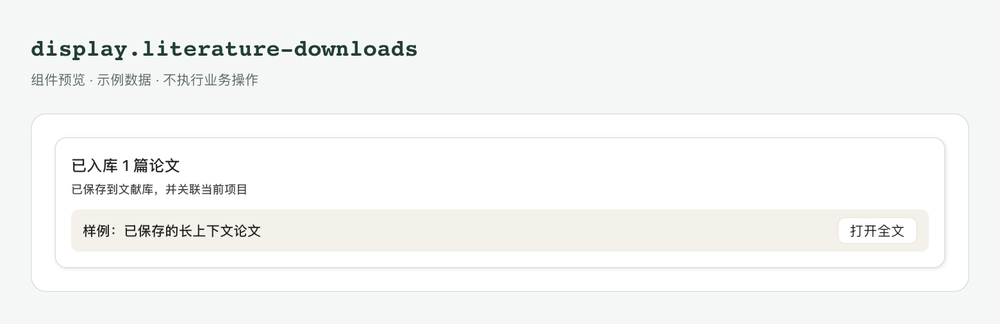
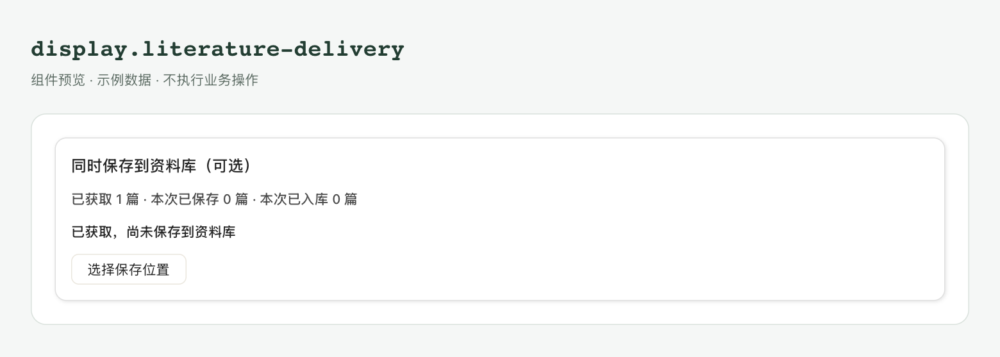
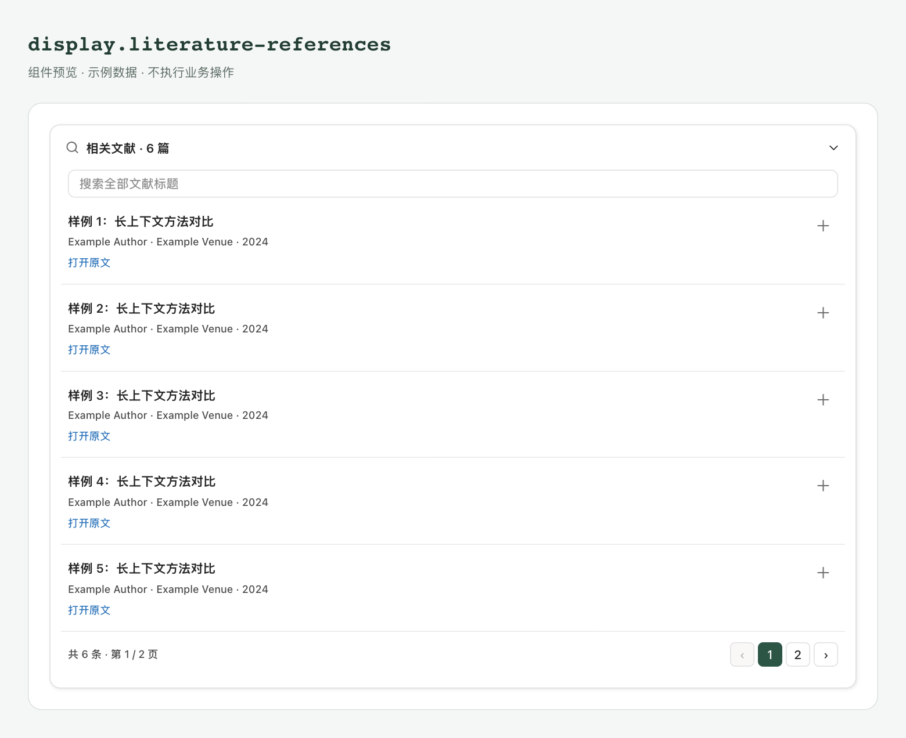
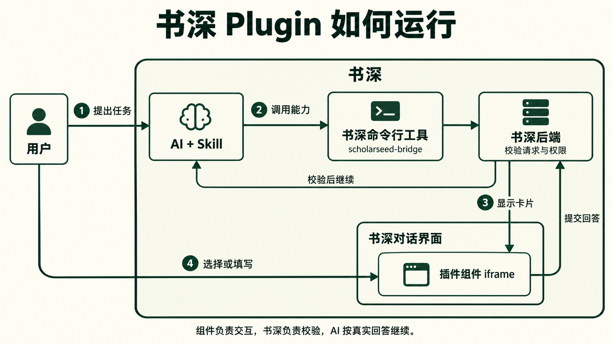

查看 Markdown 源文档Plugin 概览
English · 简体中文 · 离线阅读
Plugin 把 Skill 和对话卡片打包成一个可安装的工作流。用 Skill 告诉 AI 怎样完成任务，用卡片展示结果或收集用户选择。
插件能力处于开发者预览阶段，正在快速迭代，未来可能出现破坏兼容性的变更。
Plugin 可以做什么
- 组织业务流程：读取获准材料、调用后端、处理用户选择，再交付结果。
- 在对话中展示卡片：复用公共业务卡片，或编写自己的交互。
- 复用官方 UI：使用书深提供的 React、控件和 Conversation 组件。
- 交付可检查的安装包：生成 ZIP 与摘要，由用户确认安装。
Plugin 不提供全局工具拦截、自动批准或任意书深内部事件 hook。需要调用业务能力时，由 Skill 使用可用 API，不能只在界面里加一个按钮。
创建 Plugin
- 对话生成：在书深对话中指名
plugin-create，描述你要的流程，让 AI 生成并修改插件。
- 自己编写：按照教程学习 Skill、描述符与界面代码如何协作。示例使用普通
.js 和书深提供的 React，无需另装 Node.js、前端打包工具或编译 JSX/TypeScript；交付前仍需检查并打包 ZIP。
安装和使用
在技能中心点 添加技能，检查 ZIP 的身份、版本和风险后确认安装。对话生成的插件也可通过安装卡片交付；卡片发布不等于安装成功。
安装并启用后，在对话中要求 AI 使用它，无需先通过技能选择器绑定。
只安装可信来源的插件。组件 iframe 的隔离不等于 Skill 脚本拥有通用沙箱；插件包中不应包含凭据、登录缓存或环境文件。
开发文档
查看 Markdown 源文档创建 Plugin
English · 简体中文 · 离线阅读
Plugin 概览
本教程创建一个论文阅读笔记插件：用户提供论文材料，选择“理解方法”或“核对证据”，AI 按阅读重点生成带来源的笔记。
让 AI 创建
在书深对话中发送：
请使用 plugin-create 创建 paper-reading-notes 插件。用户提供论文或摘录后，先用卡片询问阅读重点：“理解方法”或“核对证据”。理解方法时整理研究问题、方法步骤和适用条件；核对证据时整理主要结论、对应证据和局限。笔记附上页码或段落位置，材料未提到的内容标为未说明。生成源码、检查并打包 ZIP，再提供安装卡片。
AI 会生成 Skill、描述符、组件和场景。检查交付的源码和报告后，在安装卡片中确认安装。
要修改它，在同一对话继续指名 plugin-create 并描述变更；不用重新创建一个相同身份的插件。
自己编写
在安装了目标版本书深后端的 Python 环境中，查询 host 字段需要填写的值：
python -c "from importlib.metadata import version; print('==' + version('scholarseed'))"
创建以下文件：
paper-reading-notes/ # 插件源码，也是打包输入目录
├── SKILL.md # 论文阅读流程与笔记要求
├── .scholarseed-plugin.json # 插件身份、兼容设置、卡片与动作
└── components/
├── focus.js # 阅读重点选择卡片
└── focus.preview.json # 卡片的示例输入与提交样例
request.json # 校验用请求，放在插件目录外
.scholarseed-package.json 是打包工具生成的包清单，不需要手写。
1 SKILL.md
SKILL.md 使用标准 Skill 格式（GitHub）。
---
name: paper-reading-notes
description: 按用户选择的阅读重点，为论文或摘录整理方法笔记或证据笔记。
version: "0.1.0"
---
# 论文阅读笔记
1. 确认用户提供的论文或摘录；缺少材料时请用户补充。
2. 查询 component/catalog，确认 reading.focus 可用。
3. 使用 component/request 发布“选择阅读重点”卡片，传入 question 和唯一 request_id。
4. 等待回答，从 result.answers 解析 JSON {action, values}。
5. action 为 confirm 时，按 values.focus 生成笔记：
- method：研究问题、方法步骤、适用条件。
- evidence：主要结论、对应证据、研究局限。
6. 为每条笔记附上页码或段落位置；材料未说明的内容标为“未说明”。
7. 收到取消或失败结果时停止；仅有摘要或摘录时，注明笔记覆盖的材料范围。
2 .scholarseed-plugin.json
描述符声明插件身份、卡片入口和输入输出。复制下面的内容，将 __HOST__ 替换为上方命令的完整输出。
{
"schema": 2,
"id": "paper-reading-notes",
"version": "0.1.0",
"host": "__HOST__",
"skill": "SKILL.md",
"ui": {
"compatibility": "1.0",
"exports": ["React", "mount", "Button"]
},
"capabilities": ["interaction.answer"],
"components": [
{
"id": "focus",
"slot": "reading.focus",
"entry": "components/focus.js",
"preview": "components/focus.preview.json",
"input_schema": {
"type": "object",
"required": ["question"],
"properties": {"question": {"type": "string"}},
"additionalProperties": false
},
"output_schema": {
"type": "object",
"required": ["focus"],
"properties": {"focus": {"type": "string", "enum": ["method", "evidence"]}},
"additionalProperties": false
},
"actions": [
{
"id": "confirm",
"capability": "interaction.answer",
"input_schema": {
"type": "object",
"required": ["focus"],
"properties": {"focus": {"type": "string", "enum": ["method", "evidence"]}},
"additionalProperties": false
}
}
]
}
],
"configuration": []
}
顶层字段
| 字段 |
含义 |
本教程怎么填 |
schema |
书深使用的描述符格式版本 |
填数字 2。 |
host |
插件支持的书深后端版本 |
复制查询命令的完整输出，包含开头的 ==。 |
id |
插件的唯一名称 |
填 paper-reading-notes，与 Skill 的 name 一致。更新时保持不变。 |
version |
插件自身的发布版本 |
填 0.1.0，与 Skill 和打包命令一致；发布更新时递增。 |
skill |
Skill 入口路径 |
填 SKILL.md。 |
ui.compatibility |
书深 UI 接口版本 |
填 "1.0"。 |
ui.exports |
组件使用的官方 UI 导出 |
填 React、mount、Button；增加控件时同步补充。 |
capabilities |
卡片动作需要的能力 |
此例只提交用户选择，填 ["interaction.answer"]。 |
components |
卡片列表 |
此例声明一张 focus 卡片，字段见下表。 |
configuration |
可选的配置项声明 |
此例没有配置，填 []。 |
每张卡片的字段
| 字段 |
怎么填 |
id |
插件内唯一的组件名称，此例填 focus。 |
slot |
AI 请求卡片时使用的名称，此例填 reading.focus。使用两个以点分隔的名称段，各段以小写字母开头，可包含数字和连字符。 |
public |
默认 false。自己的组件保持默认；引用公共卡片才设为 true，使用已有公共 slot，并且不能提供 entry。 |
entry |
界面的 JavaScript 路径，此例填 components/focus.js。 |
preview |
检查场景的 JSON 路径，此例填 components/focus.preview.json。 |
input_schema |
卡片 data 的 JSON Schema；省略时默认为对象。写清必填字段和允许的数据类型。 |
output_schema |
用户回答中 values 的 JSON Schema；省略时默认为对象。不要套上 {action, values} 外层信封。 |
actions |
动作数组，默认 []。每项的 id 是代码传给 submit 或 request 的名称；capability 必须出现在顶层能力数组；input_schema 校验该动作的 values，默认对象。动作 ID 在卡片内唯一。 |
例如 submit("confirm", {focus: "method"})：confirm 对应动作 ID，{focus: "method"} 同时接受动作和卡片输出 schema 的校验。
配置项与填写约束
需要声明配置时，每项填写 key（唯一名称）、type（string、integer 或 boolean）、label（显示名称），可附 required 和同类型的 default。配置声明目前不提供设置页面或值的存取接口。
描述符不接受未知字段。资源路径使用 /，相对插件根目录，不使用 ..、绝对路径或 Windows 保留名。Schema 不使用 $ref 或 $dynamicRef；改动后重新运行检查。
3 components/focus.js
按钮把所选方式提交给书深；仅在 pending 状态允许操作。需要可编辑表单时，再接入草稿与状态。
(() => {
const { React, mount, Button } = window.scholarseedUI;
const create = React.createElement;
function FocusCard({ state }) {
const disabled = state.status !== "pending";
const chinese = state.language.startsWith("zh");
return create("section", { "aria-label": chinese ? "阅读重点" : "Reading focus" },
create("p", null, state.data.question),
create(Button, {
disabled,
onClick: () => window.plugin.submit("confirm", { focus: "method" })
}, chinese ? "理解方法" : "Understand the method"),
create(Button, {
disabled,
onClick: () => window.plugin.submit("confirm", { focus: "evidence" })
}, chinese ? "核对证据" : "Check the evidence")
);
}
mount(state => create(FocusCard, { state }));
})();
4 components/focus.preview.json
场景文件为 focus.js 提供检查数据，通过描述符的 preview 字段关联。data 是示例输入，responses 是模拟动作响应，submissions 是待检查的提交值。正式对话使用实际请求数据，不读取这个文件。
{
"data": {"question": "这篇论文，你想重点了解什么？"},
"responses": {
"confirm": {"state": "resolved", "data": {"focus": {"$input": "focus"}}}
},
"submissions": {
"confirm": [{"focus": "method"}, {"focus": "evidence"}]
}
}
请求卡片
安装并启用后，AI 使用以下 scholarseed_bridge 工具参数请求卡片：
{
"capability": "component",
"operation": "request",
"request": {
"request_id": "reading-focus-1",
"slot": "reading.focus",
"data": {
"question": "这篇论文，你想重点了解什么？"
},
"title": "选择阅读重点",
"prompt": "选择后生成对应的论文阅读笔记。"
}
}
书深后端返回用户选择后，AI 从 result.answers 解析 {action, values}，按 values.focus 生成方法笔记或证据笔记。
发布前按API 参考检查 reading.focus 是否与已启用插件冲突。每次新问题使用不同的 request_id。
检查和打包
把上面 JSON 的内层 request 保存为 request.json，从插件父目录运行：
python -m service.cli.plugins validate ./paper-reading-notes/.scholarseed-plugin.json ./request.json
python -m service.cli.plugins pack ./paper-reading-notes --name paper-reading-notes --version 0.1.0 --output ./paper-reading-notes-0.1.0.zip
输出 valid=true 后，保留 ZIP 和 SHA-256。ZIP 放在源码目录外；发布更新时递增版本并生成新包。
capabilities_unchecked 表示尚未核验书深运行时的实际能力。离线通过不等于已经安装或运行，下一步仍需导入并完成端到端测试。
安装并试用
- AI 生成：在已发布的安装卡片上核对报告并确认安装。
published 只表示卡片已发布。
- 自己编写：技能中心 → 添加技能，选择 ZIP，检查后确认安装。

安装并启用后，发送：
请使用 paper-reading-notes 为我刚上传的论文整理阅读笔记，先让我选择阅读重点。
选择“理解方法”后，应得到研究问题、方法步骤和适用条件；选择“核对证据”后，应得到结论、证据和局限。两类笔记都应包含来源位置。完整检查步骤见Plugin 测试。
接下来：公共对话卡片 · 运行原理。
查看 Markdown 源文档Plugin 公共对话卡片
English · 简体中文 · 离线阅读
Plugin 概览
先选择卡片由谁驱动，再选择界面。公共 slot 是业务入口；Conversation 是可组合的 UI，两者不是一回事。
选择卡片
| 你要做什么 |
使用什么 |
| 复用检索、文献选择、授权或保存流程 |
由所属领域工具驱动公共 slot |
| 自己组织已有对话 UI |
Conversation 组件，并接入实际 props 和回调 |
| 收集自己的业务选择 |
自定义 slot、数据/动作 schema 和组件代码 |
公共业务 slot
| slot |
显示内容 |
使用方式 |
书深前端实现 |
interaction.question |
问题选项与确认 |
由 AI 的原生提问流程展示并收集回答。 |
Choices.tsx |
display.literature-search |
检索摘要、进入完整结果的按钮 |
在文献检索结果流程中展示，使用本轮结果集。 |
Summary.tsx |
preview.literature-results |
完整结果、筛选、分页与来源 |
从检索摘要打开详情，可选择论文、查看来源或加入文献库。 |
Details.tsx |
literature.selection |
论文子集选择 |
兼容已有文献流程；用户勾选后返回论文 ID 列表。 |
Choices.tsx |
literature.authorization |
全文授权涉及的论文 |
通过文献授权流程展示，用户确认后才获取全文。 |
Choices.tsx |
display.literature-downloads |
逐篇获取或入库结果 |
在获取或入库结束后展示，可打开全文或进入文献库。 |
Downloads.tsx |
display.literature-delivery |
保存位置、文件冲突与保存结果 |
通过 literature delivery 发起，由用户选择保存目标并确认。 |
Delivery.tsx |
display.literature-references |
引用列表与来源操作 |
展示正文引用的文献，可打开来源、入库或设置分类。 |
References.tsx |
描述符引用公共组件时设置 public: true，指定 slot 和场景文件，不提供 entry。实际数据和动作以组件目录为准。
公共 slot 不能通过通用 component/request 或 component/display 伪造调用：
interaction.question 由书深的原生问答流程绑定，没有独立的命令行问答操作。要收集自己的业务选择，按创建教程使用自定义 slot。- 文献卡片由
literature/result、literature/review 等领域入口建立真实上下文；先查询对应操作的实际契约，不自行拼造数据。
literature.outline、display.literature-review 是已有插件的自定义 slot，不是公共 slot。
slot 怎样找到组件
前端入口在 apps/desktop/src/renderer/src/features/literature/Component.tsx。源码路由节选：
const VIEWS = {
'display.literature-search': LiteratureResults,
'display.literature-references': LiteratureReferences,
'display.literature-downloads': LiteratureDownloads,
'display.literature-delivery': LiteratureDeliveryCard,
'preview.literature-results': LiteratureDetails,
};
const CHOICES = ['interaction.question', 'literature.authorization'];
const LEGACY_SELECTION = 'literature.selection';
结果卡片接收 content 与业务操作端口 ports；选项卡片接收 data/status/slot/submit。literature.selection 的前端注册标为 legacyOnly，用于已有绑定兼容，不作为新插件的通用问答入口。
公共 slot 的后端清单在 descriptor.py，动作约束在 ui.py，前端操作到领域能力的映射在 ports.ts。修改或复用前同时查这三处，不能只看按钮。
在描述符中引用已有公共卡片，例如：
{
"id": "results",
"slot": "display.literature-search",
"public": true,
"preview": "components/results.json"
}
将这项放入 components，按实际数据和动作补齐 schema 与能力声明。这里没有 entry，因为界面由书深实现；声明只建立引用，真正显示仍走文献领域工具。
公共卡片视觉示例
以下为公共卡片的组件预览。示例数据位于 skills/community/<插件名>/components/。
问答与论文选择
interaction.question 显示选项，literature.selection 显示可选论文子集。问答的题干和整轮确认由外层交互流程负责，不由下面的选项组件单独完成。


检索摘要与完整结果
display.literature-search 给出摘要，preview.literature-results 承载完整结果、筛选与操作。示例数据见 agentic-search/components 中的 results.json、details.json 和 question.json。


全文授权与获取结果
literature.authorization 展示本次全文授权涉及的论文；按钮和授权结果由书深原生流程处理。display.literature-downloads 显示逐篇结果。示例分别来自 literature-review/components/authorization.json 与 precise-literature-search/components/downloads.json。论文子集样例在同目录 scenario.json。


保存交付与引用
display.literature-delivery 收集保存目标和相关选择；display.literature-references 显示引用列表及来源操作。示例分别来自 precise-literature-search/components/delivery.json 与 research-idea-partner/components/references.json。


Conversation 组件
从 window.scholarseedUI.Conversation 取组件，在 ui.exports 声明 Conversation。
| 类别 |
当前导出 |
开发者负责什么 |
| 科研卡片 |
Choices、Results、Details、References、Downloads、Delivery、Review |
真实业务数据、操作端口、授权结果；科研卡通常接收 content 与 ports，Choices 接收 data/status/slot/submit |
| 正文与原文 |
Markdown、Message、Code、Formula、Tabulation |
原始内容、复制/打开回调、引用和数学含义核对；显示代码不会执行代码 |
| 产物 |
Artifact、ArtifactGroup、ArtifactMenuItems、ArtifactDestination |
不可变文件/版本身份、保存/导入/打开操作及结果；分组只负责布局 |
| 图片 |
ImageView、Images、ImageThumbnail |
已授权 URL、资源身份、加载失败、选中状态与操作；组件不会读取任意本地文件 |
| 引用与上下文 |
CitationLink、WebCitationLink、CitationSources、ConversationReference、ComposerRefChip |
引用解析、授权预览、历史快照、分页与跳转；前端标签不是读取权限 |
| 执行过程 |
ExecutionProcess、ExecutionBatch、ToolExecution、ExecutionIO、ExecutionStatus、WebSearchRecord |
真实轮次、状态、输入输出和时间；不能把未知/中断显示为成功 |
| 任务辅助 |
Plan、Failure、Suggestions、Attachments、FileFormatIcon |
计划投影、恢复资格、发送、文件身份与打开操作；UI 不自动恢复任务或发送消息 |
输入提示见 catalog.composition.Conversation，精确类型见源码与类型。导出组件不表示其所有书深内部回调都向普通插件开放。
基础控件
- 输入：Button、IconButton、Checkbox、Input、Textarea、RadioGroup、Select。
- 布局：Card 及其 Header、Title、Description、Content、Footer。
- 浮层：Dialog、DropdownMenu 及其已声明子组件。
- 表格与反馈：Table、Alert、Badge、Progress。
精确导出先查 catalog.exports，在 ui.exports 声明实际使用的顶层名称。使用官方 React，不重复打包 React 或从 Desktop 内部导入代码；自定义样式由自己的构建提供，不能假设书深生成任意 Tailwind 类。
接下来：用组件完成交互。
查看 Markdown 源文档Plugin 运行原理
English · 简体中文 · 离线阅读
Plugin 概览
AI 按 Skill 的指令发起请求，书深后端校验后，在书深对话界面展示卡片。用户提交选择后，AI 根据回答继续完成任务。

以论文阅读笔记为例：AI 请求 reading.focus → 书深后端检查数据 → 对话界面加载 focus.js → 用户选择“理解方法” → 后端返回 {focus: "method"} → AI 生成方法笔记。
从加载到绘制
- 安装检查通过后，用户确认安装并启用。AI 在真实任务中发现并使用 Skill。
- AI 查询组件目录，向可用 slot 发出请求；公共业务卡片由领域工具驱动。
- 书深固定本次交互的插件和 UI 资源版本：自定义组件在隔离 iframe 中加载包内 entry；公共卡片使用书深前端实现，不提供包内 entry。
- 自定义组件通过
mount(render) 接收快照、切换语言和主题并绘制到 #root。不要同时创建第二个 React root 或重复订阅渲染链。
component/request 等待用户回答；component/display 只展示。发布记录不表示相关业务已经完成。
处理草稿与回答
| 数据 |
用途 |
校验 |
| data |
书深传给组件的业务输入 |
组件 input_schema |
| draft |
已保存的界面草稿 |
保存流程；不是批准或执行结果 |
| values |
用户提交的值 |
动作 input_schema；interaction.answer 还校验组件 output_schema |
| {action, values} |
回到 AI 的回答信封 |
书深后端封装；不要把外层信封写进 values 的 schema |
使用 onState 接收当前快照及后续 data、draft、status、language、slot、theme。使用 mount 时，渲染订阅已经接好。
save(values) 保存草稿，不让 AI 继续；失败时保留输入。submit(actionId, values) 回答当前交互，仅在 pending 时提交；完成情况看后续状态。- 主题、语言或状态更新不能清空未保存输入，旧保存回执不能覆盖更新的编辑。
- 取消、失败、过期或未知结果，不推进依赖这个回答的步骤。
方法签名与返回值见前端 SDK。
更新和旧卡片
修改插件后递增 Skill 与描述符版本，重新生成 ZIP 和摘要，通过新安装卡片或技能中心确认更新。slot 冲突或更新失败时保留旧版，不静默接管其他插件。
旧交互固定原插件、UI 资源、数据、草稿和动作语义；新版不能重新解释旧回答。关闭插件只阻止新绑定，旧卡仍需当前权限和状态校验，不等于授权永久有效。
权限边界
组件只能使用书深给出的数据和已声明且已接通的动作。iframe 没有 Node、Electron、preload 或父文档权限，不是任意文件、HTTP 或命令代理。
Skill 调用后端与前端 SDK 是两个调用面；声明 capability 不会自动接通处理器或授予业务权限。本协议没有全局事件拦截、工具重写或自动批准接口。
接下来：可用 API · 测试状态与更新。
查看 Markdown 源文档Plugin 可用 API
English · 简体中文 · 离线阅读
Plugin 概览
scholarseed-bridge 是书深后端的 CLI，供 Agent 查询资料、管理文献和展示对话卡片。Skill 通过 CLI 调用这些能力；卡片界面使用前端 SDK。
使用 CLI
在书深的 Agent 执行环境中运行，命令格式为 scholarseed-bridge <能力组> <操作> --json '<请求>'：
scholarseed-bridge history list --json '{"limit":5}'
scholarseed-bridge component catalog --json '{"include_ui":true}'
scholarseed-bridge component preflight --json '{"slots":["reading.focus"]}'
CLI 自动使用当前会话的项目和授权。用 --help 查看参数：
scholarseed-bridge --help
scholarseed-bridge component request --help
AI 还可以通过模型工具 scholarseed_bridge 调用后端，参数格式为 {capability, operation, request}。本页的 JSON 示例使用这个格式；CLI 的 --json 只接收其中的 request。
查询实际契约
在已安装对应版本后端的 Python 环境运行：
python -m service.cli.plugins describe
返回描述符格式、组件 SDK 和请求参数定义。开发或更新插件时，以目标版本返回的定义为准；host 的填写方式见创建教程。
前端 SDK
| 方法 |
结果 |
用途 |
| window.plugin.onState(callback) |
返回取消订阅函数 |
当前快照与后续状态；卸载时取消订阅 |
| window.plugin.setCopyContent({text, markdown?}) |
Promise 返回登记结果 |
为当前卡片登记可复制文本；不写系统剪贴板 |
| window.plugin.save(values) |
Promise 返回 {state, revision} |
保存 JSON 草稿，不推进 AI |
| window.plugin.submit(actionId, values) |
void |
提交回答，完成情况看后续状态 |
| window.plugin.request(actionId, values) |
Promise 返回书深操作结果 |
调用已声明且当前上下文有处理器的操作 |
| window.scholarseedUI.mount(render) |
返回卸载函数 |
挂载 React 界面，并同步状态、语言和主题 |
| window.scholarseedUI.useCopyContent(text) |
React Hook |
将当前组件的文本加入整张卡片的复制内容 |
普通自定义卡片的 plugin-call 目前仅接通 skills.list、navigation.skills。文献卡的全文、分类和保存由领域专用端口处理；复制 literature.read、navigation.open 等能力名不会让普通卡片自动拥有这些操作。
提供卡片的复制内容
在界面状态更新后登记文本，书深会在“复制消息”中按顺序合并本轮正文与卡片。公共卡片由书深根据业务数据生成，无需重复登记。
官方 UI 的 Conversation.Choices、Results、Details、References、Downloads、Delivery 和 Review 在 mount() 内使用时会自动登记文本。组合多个组件时会合并内容；综述的折叠章节、引用、检查和问题不会因未展开而遗漏。产物保留标题和路径，不会自动读取文件正文。
Markdown、Message、Code、Formula 和 Artifact 也会自动登记；代码保留未展开的完整源码，公式保留 LaTeX、说明和注释。Tabulation 需要提供 copyText 或 invalidSource，不会从表格 DOM 推断数据。
自己绘制界面时，可以在组件内调用 window.scholarseedUI.useCopyContent(text)，并将 useCopyContent 加入 ui.exports。它会合并同一界面中各组件的文本，并在保存状态更新后重新登记；登记失败会在卡片内提示。不要在同一界面混用这个 Hook 和下方直接覆盖整张卡片文本的 setCopyContent()。
const { React, mount } = window.scholarseedUI;
function Notes({ state }) {
const [error, setError] = React.useState("");
const focus = state.draft?.focus ?? "evidence";
React.useEffect(() => {
let current = true;
window.plugin.setCopyContent({
text: `阅读重点：${focus === "method" ? "理解方法" : "核对证据"}`
}).then(() => {
if (current) setError("");
}).catch(() => {
if (current) setError("复制内容暂未保存");
});
return () => { current = false; };
}, [focus, state.revision]);
return React.createElement("p", { role: error ? "status" : undefined }, error || focus);
}
mount(state => React.createElement(Notes, { state }));
text 必填，包含标题、正文、当前选择以及需要保留的引用或链接，不要加入提交、展开等操作按钮。可附 markdown 源码；当前复制使用 text，不接受 HTML。登记内容最多 64 KiB，并受消息总大小限制。
先等待 save() 完成，再根据 onState 返回的新状态登记文本。草稿更新会使旧文本失效，旧版本登记会被拒绝。已登记文本保留在会话卡片绑定中，历史复制无需重新运行 iframe；没有文本的卡片会明确提示。登记本身不推进 AI，也不授予插件读取或写入剪贴板的权限。
查询组件与 slot
查询可用组件和官方 UI 导出：
{"capability":"component","operation":"catalog","request":{"include_ui":true}}
返回当前组件、UI 导出和组合目录。自定义 slot 再做只读冲突预检：
{"capability":"component","operation":"preflight","request":{"slots":["reading.focus"]}}
预检只检查冲突，安装与启用时会再次校验。
查询后端操作
让 AI 通过模型工具查询操作列表，再查看需要的参数定义。下面两项是模型工具操作：
{"capability":"contract","operation":"list","request":{}}
{"capability":"contract","operation":"describe","request":{"target_capability":"literature","target_operation":"read"}}
当前 CLI 工具列表
表中名称接在 scholarseed-bridge 后。
| 子命令与操作 |
做什么 |
运行后的影响与注意事项 |
history list / search / read |
列出会话、检索消息、补读正文 |
读取当前允许访问的历史会话。 |
resource list / read |
列出或读取当前项目资料 |
只读；大文件按返回的分页信息继续读取。 |
resource import |
将已发布产物或会话文件导入项目资料 |
写入项目资料；先确认导入文件和目标位置。 |
pdf list / status / read / search / library / annotations |
查看 PDF、准备状态、原文、证据窗口和标注 |
读取已获准的内容；返回引用身份与页码。 |
pdf prepare |
准备 PDF 原文与索引 |
启动准备任务；后续用 status 查询进度。 |
pdf materialize |
将 PDF 内容写到指定位置 |
创建文件和相关记录；先确认目标路径。 |
pdf register-card |
登记论文内容卡片 paper_card |
写入结构化文献证据及其版本。 |
literature list / read / annotations / receipt |
查看项目文献、原文、标注和全文授权回执 |
receipt 返回本轮实际获准和已获取的全文范围。 |
literature authorize |
请求用户授权读取全文 |
展示候选论文，等待用户确认后继续。 |
literature result / review |
展示检索结果或综述流程卡片 |
按检查点展示结果、收集选择或确认大纲。 |
literature acquire |
获取获准候选的开放全文 |
下载并托管文件；逐篇返回获取结果。 |
literature ingest / import |
将下载结果或会话文件导入文献库 |
写文献库并关联当前项目；import 按用户明确指令直接导入。 |
literature delivery |
展示全文保存流程 |
固定本次交付批次，按用户后续选择保存或入库。 |
literature collection.list / tag.list |
列出分类或标签 |
分类属于当前项目，标签全局共享。 |
literature collection.create / collection.update |
创建、重命名或移动分类 |
修改当前项目的分类结构。 |
literature tag.create / tag.update |
创建或重命名标签 |
修改全局标签，重命名影响所有使用它的项目。 |
literature collection.delete / tag.delete |
删除分类或标签 |
先返回受影响的分类、标签和文献关联，用户确认后再执行删除。 |
literature organize |
增删文献的分类、标签关系 |
修改选中文献的归属关系。 |
search run |
执行产品搜索 |
访问外部搜索并登记新结果；不可直接自动重试，重复执行会再次搜索。 |
search browser |
搜索过程的内部浏览器回调 |
由已有搜索任务调用，插件使用 search run。 |
artifact publish |
发布已生成的文件产物 |
登记文件及其固定版本，供用户打开或保存。 |
plan get |
读取当前计划 |
返回计划、步骤 ID 和 revision。 |
plan write / structure / action |
写计划、调整结构、记录执行动作 |
修改计划状态；提交当前 revision 和该次操作的请求 ID。 |
task activate |
激活当前任务身份 |
修改当前轮次的任务绑定，由 Skill launcher 调用。 |
display-card |
展示业务卡片 |
创建可恢复的对话卡片；此命令直接接 --json。 |
component catalog / preflight |
查询组件、UI 导出或 slot 冲突 |
只读。 |
component request / display |
请求用户交互或展示自定义卡片 |
创建卡片；request 等待用户回答，display 仅展示。 |
源码与类型
在与目标书深版本匹配的源码版本查阅：
升级出现不兼容时，修改源码并重新检查；不要只扩大 host 范围或略过校验。
查看 Markdown 源文档Plugin 测试
English · 简体中文 · 离线阅读
Plugin 概览
用论文阅读笔记插件走完检查、安装和对话使用流程。
检查插件包
按创建教程执行 validate 和 pack。validate 使用 request.json 中的内层请求。
收到外部 ZIP，或需要核对传输后的字节时执行：
python -m service.cli.plugins check ./paper-reading-notes-0.1.0.zip
- 核对包身份、版本、实际 SHA-256 和每个 issue。
- 检查场景覆盖所有动作，以及每个动作的提交值。
- ZIP 放在源码目录外，路径使用可移植相对路径；不要带绝对路径、盘符、反斜杠、.. 或 Windows 保留名。
- 不打包凭据、.env、登录缓存、虚拟环境或无关文件。
capabilities_unchecked 表示还需要在书深中验证实际调用。
导入书深并完成第一次对话
准备 paper-reading-notes-0.1.0.zip 和一篇你要阅读的论文。
- 打开书深，进入技能中心 → 添加技能，选择 ZIP。
- 核对插件名称、版本和检查结果，确认安装。
- 在自己的技能列表中找到
paper-reading-notes 并启用。通过 AI 创建的插件，也可以直接在对话安装卡片中确认安装。
- 打开自己的对话，上传论文或粘贴摘录，发送下方指令。
- 等到“选择阅读重点”卡片出现，点理解方法，检查笔记是否包含研究问题、方法步骤和适用条件，并标注来源位置。
- 再发起一次任务，选择核对证据，检查是否改为整理主要结论、对应证据和局限。材料未说明的内容应标为“未说明”。
可以直接发送：
请使用 paper-reading-notes 为我刚上传的论文整理阅读笔记，先让我选择阅读重点。
无需先通过技能选择器绑定插件。若没有出现卡片，检查插件是否启用，以及工具记录中是否发起了 component/request。
检查任务结果
| 测试 |
预期结果 |
| 选择“理解方法” |
回答中的 focus 为 method，生成方法笔记并附来源。 |
| 选择“核对证据” |
回答中的 focus 为 evidence，生成证据笔记并附来源。 |
| 取消阅读重点选择 |
不再生成本轮笔记。 |
| 只提供论文摘要 |
笔记注明仅基于摘要，不补写全文中的实验或结论。 |
| 使用下载、保存或入库能力的插件 |
在对应文件目录、资料库或文献库中核对实际结果。 |
记录任务输入、工具返回和输出笔记，保留出错时的截图或录屏。
检查界面和更新
对于自定义卡片，调用 setCopyContent() 后点击消息下方的复制按钮。将剪贴板粘贴到文本编辑器，核对正文、卡片、后续结论的顺序，以及选择、引用和链接是否完整。切换会话再返回，确认历史卡片内容仍包含在复制结果中；修改草稿后应重新登记，不能继续复制旧选择。未登记文本时，复制结果应明确标出缺失的卡片内容。
- 界面：明暗主题、窄窗口、键盘、长文本和错误提示。
- 状态：重绘保留编辑，旧保存回执不覆盖新输入，取消后不继续。
- 更新：新包、新摘要、新安装确认；slot 冲突不接管其他插件，失败保留旧版。
- 旧卡片：按固定版本恢复，并重新检查当前权限。
- 平台：macOS 与 Windows 分别验证受影响的安装和运行。
排障
| 现象 |
先检查 |
| 找不到创建或预览按钮 |
页面入口隐藏；在对话中指名 plugin-create |
| 对话无法使用 plugin-create |
当前版本是否包含技能、是否启用、书深技能清单是否正常 |
| host 不兼容 |
后端 distribution 版本、描述符范围和实际契约 |
| 已安装但没卡片 |
启用状态、component/catalog、slot 和真实工具请求 |
| component_value_invalid |
data、动作 values、output_schema；不要把外层回答信封当 values |
| plugin_capability_unavailable |
当前卡片是否有实际处理器；能力声明不是接通操作 |
| ui_dependency_unavailable |
官方资源、compatibility、实际 exports；不要自带 React 冒充书深提供的资源 |
| 保存后输入丢失 |
本地编辑与快照合并，旧回执是否覆盖了新输入 |
| 技能列表失败或 503 |
书深技能清单与初始化日志；恢复后重试，不模拟成功 |